UDN
Search public documentation:
GettingStartedWithGeometryModeCH
English Translation
日本語訳
한국어
Interested in the Unreal Engine?
Visit the Unreal Technology site.
Looking for jobs and company info?
Check out the Epic games site.
Questions about support via UDN?
Contact the UDN Staff
日本語訳
한국어
Interested in the Unreal Engine?
Visit the Unreal Technology site.
Looking for jobs and company info?
Check out the Epic games site.
Questions about support via UDN?
Contact the UDN Staff
几何体模式入门指南
概述
开始
 当您进行这个操作时，您选中的画刷将会改变外观来告诉您已经处于新的模式。如下所示：
当您进行这个操作时，您选中的画刷将会改变外观来告诉您已经处于新的模式。如下所示：
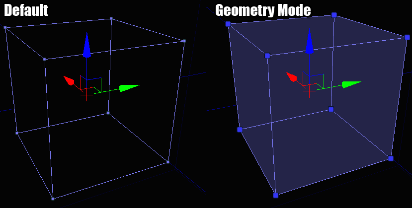
选择
 所有的这些元素都可以向 UnrealEd 中的任何其它物体那样进行选择 – 一次选择一个、多个或者进行组合选择。
所有的这些元素都可以向 UnrealEd 中的任何其它物体那样进行选择 – 一次选择一个、多个或者进行组合选择。
编辑
修改器
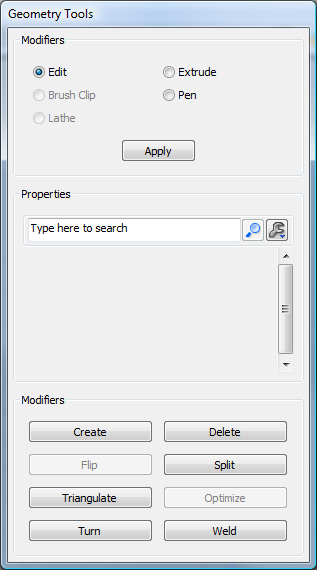
修改器以两种形式出现： 主动和被动。 被动的修改器是指需要您和它进行交互使其来进行工作的修改器。 主动的修改器是指它将立即对您选择的任何物体起作用，不需要您进行拖拽鼠标或其它类似的事情。 被动修改器出现在对话框的顶部，在属性窗口的上面，因为它们通常可以根据您设置的参数来影响修改器的作用。主动修改器出现在对话框的底部，因为它们是一些押下按钮，不需要任何输入或参数。被动修改器
Edit（编辑）
这是几何体模式的默认修改器，它基本地展现了现状。它不会对您选择的物体进行任何特殊的处理。您可以在这个模式下拖拽、旋转及缩放您的选择物体就像 UnrealEd 中其它正常的 actor 一样。Extrude（挤压）
它将会沿着选中物体的法线向前移动选中的物体，如果需要，它将在选中物体的后面创建一个新的几何体。属性
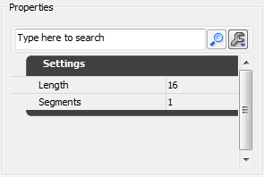
Length（长度） - 您希望每个挤压出来的块多大。 Segments（段数） - 每次您应用该修改器时创建的挤压块的多少。示例
在下面的图片中，我已经把画刷顶部的多边形挤压 64 个单位。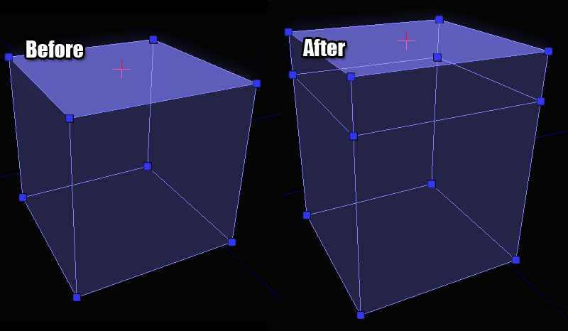
Brush Clip（画刷剪切）
画刷剪切时把一个画刷切成碎片或者把一个画刷分割为多个画刷最快的方法。它基本的观念是您在视口中定义 2 个定位点，当您进行剪切操作时，那条线用于剪切画刷。您可以把这条线想象成为一条穿过奶酪的拉线。属性
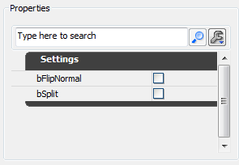
bFlipNormal（翻转法线） - 如果选中，剪切将会在法线的另一侧发生。 bSplit（分隔） - 如果选中，画刷将会被分割为两片，而不是丢掉在剪切线后面的几何体。示例
要想放置剪切定位点，请确保聚焦在 2D 视口中。您将会看到一个白盒跟随着您的定位点。这个白盒预示着剪切定位点落下的地方。如果您押下空格键，您将会把一个定位点放置在那里。移动鼠标到您想放置第二个定位点的地方并再次点击空格键。您将会看到类似于以下展示的东西：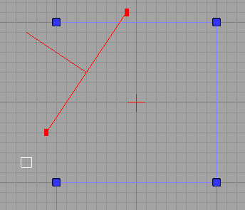
如果您错误地放置了剪切定位点，点击 ESCAPE 键将会删除您上一次放置的定位点。 如果您点击“Apply（应用）”（或按下‘回车’键），您将会剪切掉在剪切线后面的几何体。线前面的部分通过从线中心指出的线来指出。线的方向是很重要的，所以请习惯它的显示状态。只要您应用了修改器，将会看到以下事情：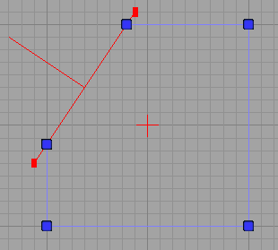
如果您选中了 bFlipNormal（或者您在按下‘回车’键时按住了 SHIFT 键），除了它将表现为剪切线指向另一个方向外，您将会获得同样的操作。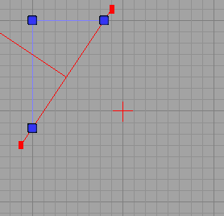
最后，如果选中了 bSplit，您最终可以获得 2 个画刷。在下面的图片中我已经把画刷移动分离，以便您可以看到分割的实际效果，但是在这时您应该有一定的想象效果。
Pen（画笔）
画笔修改器允许您以自由的方式描画 2D 图形，然后把那个图形转化为画刷。这对于创建那些需要环绕许多几何体的物体比如阻挡体积来说是非常有用的。属性
 bAutoExtrude（自动挤压） - 如果选择，所描画的图形将会自动挤压为一个完整的画刷。如果您尝试创建一个薄片画刷，请不要选中该项。
bCreateBrushShape（创建画刷形状） - 如果选中该项，修改器的最终结果将是一个“画刷形状”而不是一个“画刷”。画刷形状可以用作 Lathe 修改器的模板。
bCreateConvexPolygons（创建凸面多边形） - 当创建画刷时，您所描画的形状需要被细分为三角形，以便多边形保持是凸面的(有时候虚幻引擎要求多边形是内部的)。如果选中该项，这些三角形将会被优化为尽可能少的凸面多边形。
ExtrudeDepth（挤压深度） - 如果 bAutoExtrude 被选中，那么这个文本域决定了画刷创建的深度。
bAutoExtrude（自动挤压） - 如果选择，所描画的图形将会自动挤压为一个完整的画刷。如果您尝试创建一个薄片画刷，请不要选中该项。
bCreateBrushShape（创建画刷形状） - 如果选中该项，修改器的最终结果将是一个“画刷形状”而不是一个“画刷”。画刷形状可以用作 Lathe 修改器的模板。
bCreateConvexPolygons（创建凸面多边形） - 当创建画刷时，您所描画的形状需要被细分为三角形，以便多边形保持是凸面的(有时候虚幻引擎要求多边形是内部的)。如果选中该项，这些三角形将会被优化为尽可能少的凸面多边形。
ExtrudeDepth（挤压深度） - 如果 bAutoExtrude 被选中，那么这个文本域决定了画刷创建的深度。
示例
修改器和画刷剪切工具的工作方式类似。您在 2D 视口中放置一系列的定位点，当您完成这个操作后，按下回车键来从它创建一个新的画刷。只要您已经放置一些定位殿后，您或许会看到以下情形： 当您到达您图形绘制的尾部时，有两种方式来结束图形并创建最终画刷。您或者在您放置的第一个定位点上再放置一个定位点，来使图形闭合。或者您可以按下回车键（第一个定位点和最后一个定位点将会自动地连接到一起）。
当按下 ENTER 键后，我们将会获得这样的结果：
当您到达您图形绘制的尾部时，有两种方式来结束图形并创建最终画刷。您或者在您放置的第一个定位点上再放置一个定位点，来使图形闭合。或者您可以按下回车键（第一个定位点和最后一个定位点将会自动地连接到一起）。
当按下 ENTER 键后，我们将会获得这样的结果：
 这是最终得到的画刷的 3D 样子，以便您可以更好地明白所发生的操作：
这是最终得到的画刷的 3D 样子，以便您可以更好地明白所发生的操作：
 您可以看到这个修改器允许您只需要很小的努力便可以创建一些非常复杂的画刷和体积。
您可以看到这个修改器允许您只需要很小的努力便可以创建一些非常复杂的画刷和体积。
Lathe
允许您使用画刷形状（通过画笔修改器创建），然后围绕一个支点旋转它们来创建曲线画刷。这和早期的 2D 图形编辑器功能有几分相像。属性
 AlignToSide - 如果选中该项，最终画刷将额外地旋转半圈。如果您进行实际操作便可以看到显著的效果。
Segments（段数） - 您最终得到的画刷具有多少段。
TotalSegments（总段数） - 一个完整的选装包含的总段数。
Segment（分割段数）文本域有点令人迷惑但它的功能实际上是非常强大的。比如您想要获得一个90度，它其中包含 4 段。您可以设置 Segment（分隔段数）为 4，TotalSegments（总分割段数）为 16。让我们来看看它是怎样工作的，90 度是 360 度的 1/4，所以 4 个分隔段数需要总共 16 个分隔段数来维持那个比率。
AlignToSide - 如果选中该项，最终画刷将额外地旋转半圈。如果您进行实际操作便可以看到显著的效果。
Segments（段数） - 您最终得到的画刷具有多少段。
TotalSegments（总段数） - 一个完整的选装包含的总段数。
Segment（分割段数）文本域有点令人迷惑但它的功能实际上是非常强大的。比如您想要获得一个90度，它其中包含 4 段。您可以设置 Segment（分隔段数）为 4，TotalSegments（总分割段数）为 16。让我们来看看它是怎样工作的，90 度是 360 度的 1/4，所以 4 个分隔段数需要总共 16 个分隔段数来维持那个比率。
示例
在解释如何使用这个修改器时，我们需要对画笔修改器做一个简短的回顾。为了使用 Lathe 修改器，您必须创建一个画刷形状。这个操作您可以通过在画笔修改器中创建画刷来完成，但是这个过程中必须选中 bCreateBrushShape。当您完成了上述操作时，您的线将会变为浅绿色，这意味着您所做的操作是正确的。 当完成后，您或许会获得类似于下图的的画刷形状： 您可以在您的关卡中创建尽可能多的画刷形状。它们根本不会影响您的 BSP 几何体，它们纯粹地用于 Lathe 修改器。
只要您选中了那个图形，并且想 Lathe 它时，您需要做以下几件事情。
1. 选择画刷形状。
2. 在画刷形状之外的某处放置支点。
这是很重要的，因为支点是您旋转地中心。可以把它想象为您的圆圈的中心。有几种方法来手动地删除支点，但是最快的方法是点击您想放置支点的地方，然后在按下鼠标中间键的同时按下 ALT 键。
3. 确保一个包含着那个画刷形状的自上而下的视图的视口处于激活状态。
这不是非常明显，但稍后将会变得清晰。当您准备好 lathe 一个图形时，您应该会看到下面的图片：
您可以在您的关卡中创建尽可能多的画刷形状。它们根本不会影响您的 BSP 几何体，它们纯粹地用于 Lathe 修改器。
只要您选中了那个图形，并且想 Lathe 它时，您需要做以下几件事情。
1. 选择画刷形状。
2. 在画刷形状之外的某处放置支点。
这是很重要的，因为支点是您旋转地中心。可以把它想象为您的圆圈的中心。有几种方法来手动地删除支点，但是最快的方法是点击您想放置支点的地方，然后在按下鼠标中间键的同时按下 ALT 键。
3. 确保一个包含着那个画刷形状的自上而下的视图的视口处于激活状态。
这不是非常明显，但稍后将会变得清晰。当您准备好 lathe 一个图形时，您应该会看到下面的图片：
 我现在俯视一下这个形状，并把支点放在一个较好的位置，然后点击‘应用’按钮。这是最终的得到的画刷：
我现在俯视一下这个形状，并把支点放在一个较好的位置，然后点击‘应用’按钮。这是最终的得到的画刷：
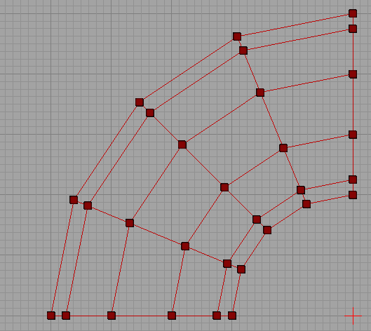
从更好的视角来看：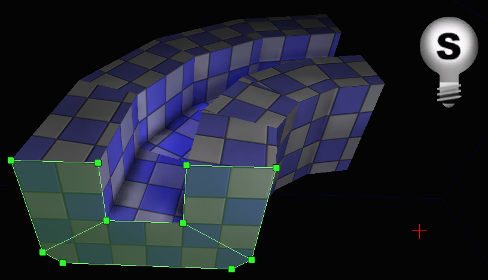
这里您可以清除地看到画刷形状和支点是如何协同工作来创建最终画刷的。现在画刷形状可以用于关卡中的任何地方或者进行删除。主动修改器
Delete（删除）
从源画刷中删除您已经选中的任何东西。注意，如果您删除某个有多项依赖于它的东西（比如边或顶点），几何体将会倒塌来反映最终效果。Create（创建）
Create（创建）在当您的物体中创建一个洞并需要再次把它填充回去时是有用的。它从您选中顶点的集合中创建新的多边形。示例
假设您有一个丢失了多边形的画刷，像下面这个一样：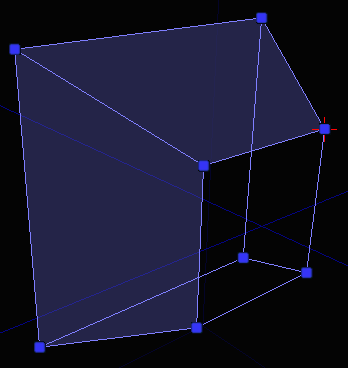
要想创建新的多边形来填充那个洞，您需要按照顺时针的顺序选中您想用于组成新的多边形的顶点，然后点击 Create（创建）按钮。在您点击那个按钮之前，您会看到类似于下面显示的这些东西（注意选中顶点的渲染）： 您从哪个顶点开始无关紧要，重要的是您需要按照顺时针的顺序选择它们。如果按照逆时针的方向选择它们，不会发生任何错误，但是多边形将会想后构建。然后您将必须是有 Flip（翻转）修改器来修复它。
只要您点击了 Create（创建）按钮，您将会在那个画刷上填充上一个新的多边形。
您从哪个顶点开始无关紧要，重要的是您需要按照顺时针的顺序选择它们。如果按照逆时针的方向选择它们，不会发生任何错误，但是多边形将会想后构建。然后您将必须是有 Flip（翻转）修改器来修复它。
只要您点击了 Create（创建）按钮，您将会在那个画刷上填充上一个新的多边形。
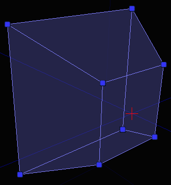
Flip（翻转）
Flip（翻转）选中的多边形，以便它面向另一个方向。这对于那些由于任何原因丢失了梨状多边形的画刷或者如果您创建一个新的多边形但是选择顶点的顺序错误时是有用的。Split（分隔）
它允许您执行类似于“环切”和“解剖刀”的操作，正如它们在其它 3D 包中所说明的那样。您可以把它想象成为一个画刷剪切修改器的专用版本。示例
您可以根据您在画刷上已经选择的东西使用许多不同的方式进行分割。各种情况如下所示：


 如果您没有选中有效的组合物，分割按钮将会变为禁用状态，所以如果您遇到这种情况请参照这些图片来选择有效的组合物。
如果您没有选中有效的组合物，分割按钮将会变为禁用状态，所以如果您遇到这种情况请参照这些图片来选择有效的组合物。
Triangulate（三角化）
这个修改器可以对一个物体进行三角化处理。这意味着选中的多边形将会细分为三角形。如果您想对画刷有更加精细的控制，这个功能是有用的。 如果您想三角化整个画刷，请不要预先选择任何多边形。没有选中多边形意味着“三角化整个画刷”。示例

Optimize（优化）
这个修改器将会查看您选中的多边形（如果没有选中多边形将查看整个画刷），然后把这些可以组成为凸面多边形的多边形融合到一起。这对于从您先前已经在其上面进行了许多分割和三角化操作的画刷中移除额外的多边形是有用的。 当您以某种怪异的方式移动一个顶点时，编辑器将会自动地三角化它周围的多边形。只要您把任何东西都放置在正确的位置上，仅需点击这个按钮来整理您的画刷。这时该工具便有了很好的修复作用。示例
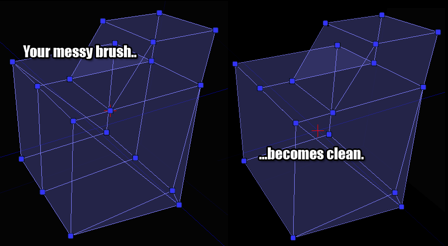
Turn（旋转）
这个修改器可以用于旋转边。这个修改器有一个限制条件是必须对选中的边的每个面进行三角化处理，因为那是使得旋转一个边具有逻辑意义的唯一方式。您可以一次旋转多个边，但是一定要小心，因为这有时可能会导致混乱的结果。示例
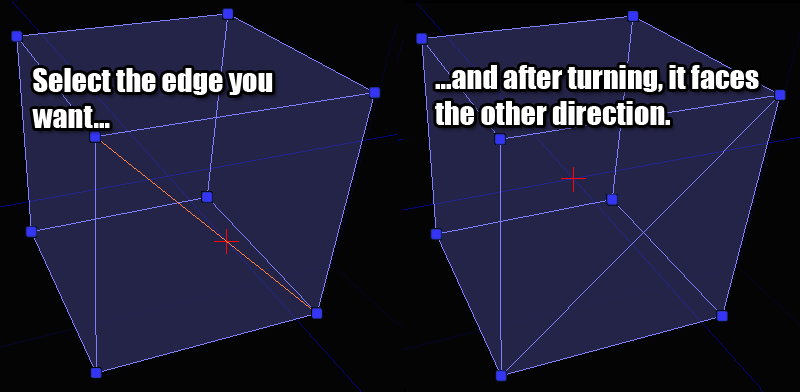
Weld（融合）
这个修改器用于把顶点融合到一起。同样的效果也可以通过在每个顶点上彼此进行拖拽来实现，但是这个工具允许您快速地融合它们，不必担心需要手动地把它们排列到一起。示例
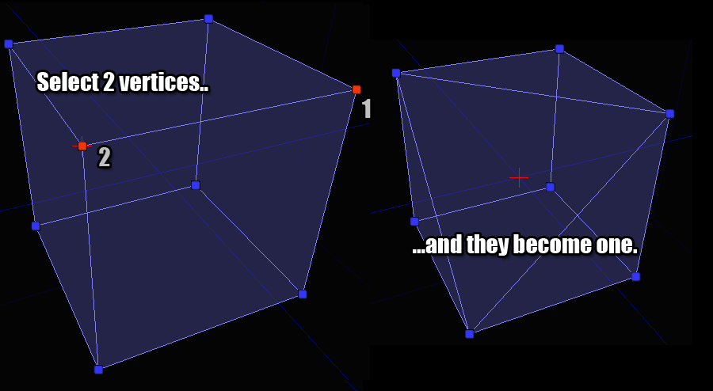
注意在这个例子中，选择顶点的顺序是有影响的。Vertex 2 将会融合到 Vertex 1 的位置。